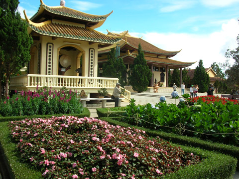
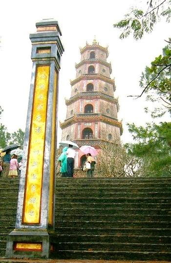
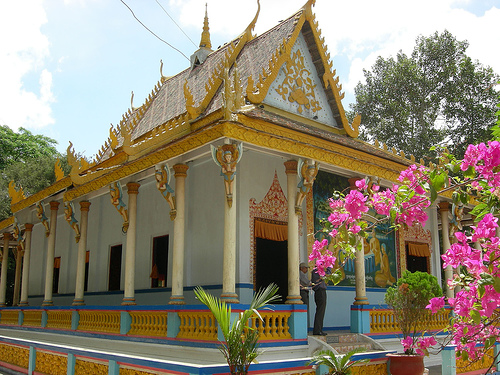

Ngày trước, vãng cảnh đền chùa là một thú tiêu dao. Đến vào các ngày thường, không vào các ngày lễ hội. Ngày nay, đến các nơi thờ tự, phần nhiều người ta lễ là chính, tham quan chỉ là “xem qua”.

Chùa Trúc Lâm Đà Lạt
Những ngôi chùa cổ thường khiêm tốn về chiều cao, nom đường bệ và trầm mặc ẩn mình trong khuôn viên có cây cổ thụ. Chùa Mía ở Sơn Tây là ngôi chùa cổ kính, có một ngọn tháp hình chóp lạ kiểu không giống những ngọn tháp chùa khác mà tôi từng biết. Chùa có nhiều nếp nhà và nhièu nơi thờ phụng. Các nhà đều thấp và tối. Rất nhiều tượng loại ông Thiện, ông Ác mà thiên về ông Ác nhiều hơn, bởi vị nào cũng cau mày, trừng mắt, tay nắm chặt hoặc cầm chắc vũ khí. Mấy dãy tượng La Hán thì ít sinh khí, hình như đắp chứ không phải tạc. Ngoại cảnh của chùa không làm tôn chùa lên. Tiếng tăm của chùa lan khá xa, song khó giải thích. Cũng là chùa cổ và có tiếng tăm, chùa Thiên Mụ hấp dẫn hơn nhiều về phương diện tham quan du lịch.
Như là có sự ganh đua với đạo Gia tô, mươi lăm năm trở lại đây có “phong trào” trùng tu, tôn tạo đình, đền, chùa, nhất là chùa. Làm lại trên nền cũ ngôi chùa đã bị đại bác Pháp phá sập hồi kháng chiến như chùa Thiên Trù vùng Hương Tích thì đi một nhẽ. Có những ngôi chùa lâu năm vốn đã khá qui mô như chùa Hải Ninh ở Hải Phòng cũng bị phá bỏ để xây mới hoàn toàn to hơn, cao hơn, đẹp hơn; nghe nói dựa vào nguồn tài trợ của một nhà sư Việt kiều bên Pháp, cha của sư bà trụ trì chùa này. Các ngôi chùa tân tạo nom uy nghi, giấu không kín vẻ phô trương mà lại vắng cái vẻ thâm nghiêm, thanh tĩnh của các ngôi chùa cổ. Chúng ít nhiều đều mang hơi “hiện đại” không chỉ ở các bóng đèn điện nhấp nháy trên bàn thờ, không chỉ ở các viên gạch men nhập ngoại, không chỉ ở các thiết bị thu phát thanh, thu phát hình,... Cái “mùi” hiện đại có thể cảm nhận tại hầu khắp mọi nơi thờ phụng, qua thiện nam tín nữ, qua lễ vật và những lời cầu khấn, qua cả nơi gửi xe, qua không khí dịch vụ đeo bám và ám ảnh khách du. Người ta nói: đầu tư vào khách sạn không bằng đầu tư vào trường tư, đầu tư vào trường tư không bằng đầu tư vào đền chùa. Đầu tư vào đền chùa độ rủi ro hầu như bằng không, chẳng phải thuế má gì; việc ăn chia dễ trót lọt, chưa thấy ở đâu bị “thần công lý” sờ đến.

Chùa Thiên Mụ
Tôi đã đến nhiều đền chùa chỉ gặp một nơi duy nhất không có “hòm công đức”, đó là thiền viện Trúc Lâm ở ngoại vi Đà Lạt. Một quần thể kiến trúc chùa mới xây dựng trên một ngọn đồi thông trong xuống một cái hồ khá rộng nước trong xanh thuộc khuôn viên vui chơi giải trí của một khu du lịch. Chùa và cảnh chùa đẹp. Tên thiền viện bằng chữ quôc ngữ to nổi bật trên cổng chính. Tên các nhà, các phòng cũng bằng chữ quốc ngữ. Không như ở nơi gọi là chùa Tàu mới dựng chưa lâu cũng ở Đà Lạt chẳng có qua một chữ Việt nào! Trong thiền viện có nơi trưng một lối chữ quốc ngữ viết kiểu triện, hoặc chân phương hoặc phóng khoáng, bay bướm tựa kiểu cách các chữ vuông Á Đông. Cách đây chưa lâu, truyền hình Việt Nam đưa tin về các cuọc thi viết chữ Hán. Sao không tổ chức thi viết chữ quốc ngữ nhỉ? Thi “thư họa” chữ Việt, chứ sao! Thiền viện có một phòng trưng bày văn hóa phẩm Phật giáo, gồm các phiên bản cổ, các di vật cổ, ảnh các chùa cổ trong nước. Chưa thật phong phú song đáng ghi nhận. Trụ trì thiền viện là một hòa thượng đã gần tám mươi tuổi. Cụ có một bài kệ đề là Mộng ghi trên một tấm bảng gồm bốn câu sáu chữ mà chữ nào cũng viết hoa phụ âm đầu:
Gối Thân Mộng, Dạo Cảnh Mộng.
Mộng Tan Rồi, Cười Vỡ Mộng.
Ghi Lời Mộng, Nhắn Khách Mộng.
Biết Được Mộng, Tỉnh Cơn Mộng.
Chừng nhà tu hành muốn nhắn nhủ lời cảnh báo tới khách du ghé cửa Thiền. Song thiền viện tọa lạc kề khu du lịch sinh thái Suối Ngọc-Vua Bà, du khách tới đó có thể “vơi lòng trần” theo cái nghĩa tạm quên cái eo sèo tục lụy để hòa vào thiên nhiên phóng khoáng và thanh sạch, còn “tỉnh mộng” bon chen thì e rằng... còn muốn “mộng” dài dài. Chùa không đặt “hòm công đức” nhưng nơi mấy nải chuối trên Phật đài ai đó đã đặt (để kính lễ) những tờ giấy bạc trần gian. Một tờ như vậy nằm lạc cạnh cái vạc đồng có dạng cái chậu sâu lòng; một nhà sư trẻ cầm dùi gõ vào vạc như kiểu thỉnh chuông, xong nhẹn tay nhón tờ giấy bạc cho vào trong vạc. Những tờ giấy bạc này hẳn chẳng bị (được?) đốt như loại giấy bạc “âm phủ”. Biết làm sao được! Nhiều chùa không ưng cho cúng vàng mã vẫn phải xây lò hóa đàng hoàng. Khách lễ còn đua nhau cúng cả tiền trần gian. Sư cụ đạo hạnh có cao sâu mấy cũng khó mà quán xuyến. Đến Phật tổ còn phải làm ngơ cho thủ túc vòi quà đút của thầy trò Đường tăng nữa là!
Nhìn chung lớp sư cao niên, các vị trong Nam dường như thông tuệ hơn. (Ở ngoài Bắc, về sau này nhà Phật mới có trường lớp đào tạo bài bản). Tuy nhiên, vị sư coi chùa Sài Ôn, Sóc Trăng, có khác, dáng vẻ chất phác; động cơ đi tu cũng khá là giản tiện, nói là “tiền duyên” xui nên cũng được. Ông vốn là con nhà buôn người Hoa, hồi trước trốn các cuộc lùng bắt đi lính ngụy cho Pháp lánh vào chùa rồi “xuất gia” thật sự luôn. Đã qua tuổi “xưa nay hiếm” ông vẫn còn khỏe mạnh. Ông đã lên tới chức hòa thượng. Tiếng Việt, tiếng Khơ me của ông tạm đủ dùng; tiếng Hán có lẽ không nhiều. Chủa Sài Ôn thường được giới du lịch và giới truyền thông gọi là chùa Chén Kiểu. Tôi được đọc một bài báo, hay xem trên truyền hình sao đó, nói rằng có tên gọi như vậy là do người ta đập các chén kiểu lấy mảnh đắp trang trí khắp chùa (tiếng miền Nam, bát gọi là chén, đồ sứ gọi là đồ kiểu,-miền Trung cũng gọi đồ sứ như vậy). Sự thật chẳng phải thế! Chùa này trước đây bị bom đạn Pháp, rồi Mĩ, phá hỏng; sau chiến tranh, khi trùng tu người ta nhập các mảnh sứ trang trí của Nhật; thiếu một ít, người ta mới lấy mảnh vỡ đồ sứ (không chỉ mảnh bát, mà cả mảnh đĩa, mảnh bình,...) bù vào. Do vậy, cái tên “chùa Chén Kiểu” thường gọi hiện nay là vô nghĩa! Chủa Sài Ôn vào loại chùa lớn trong số 90 chùa của tỉnh Sóc Trăng. Chùa to, cao, kiến trúc Khơ-me. Chùa còn giữ được một bộ luật Phật bằng tiềng Khơ-me viết trên lá buông từ năm 1911 cách nay hơn 90 năm một chút. Bộ sách còn khá nguyên vẹn, mang màu vàng nâu của lá buông ép khô. Chùa có hai tượng rồng dữ dội và hơi cầu kì do người Hoa ở thị xã Sóc Trăng dâng cúng, có lẽ không hợp lắm, chẳng cần đến rồng dữ canh chùa, lại là chùa thuộc phái Tiểu thừa! Không như ở nhiều chùa khác mà các tháp trong vườn chùa chỉ dành cho các nhà tu hành, chùa Sài Ôn ngoài hai tháp lớn và cao dành cho sư còn một tháp cũng cao lớn dành cho chúng sinh và một số tháp nhỏ hơn của tư nhân. Gần đó, một tháp to dùng làm lò thiêu xác.

Chùa Dơi ở Sóc Trăng
Các chùa Khơ-me đều thuộc Phật giáo Tiểu thừa, chỉ thờ đức Phật Thích Ca. Trong chùa toàn tượng của Ngài: ngồi thiền, giảng đạo, khất thực,... Có chùa thêm tranh tượng mười Ba-la-mật (Bồ-tát). Không có sư nữ. Trong các chùa này có cả những đồ cúng hiến của người Kinh, nhiều biển ghi tên Việt kiều Mỹ.
Chùa Dơi cũng là một chùa nổi tiếng ở Sóc Trăng. Chuyện dơi đã không ít lần được lên báo, lên truyền hình. Có một “đặc sản” của chùa này ít được nói đến: lợn năm móng. Chân lợn thường chỉ có bốn móng (4 ngón). Không biết tự đời nào lợn của một nhà trong vùng đẻ ra một lợn con mà chân có 5 móng. Người ta cho là quái, không dám nuôi, cũng không dám giết, bèn mang lên chùa. Nhà chùa đành cứ nuôi. Từ đó thành lệ, hễ nhà ai có lợn 5 móng là đem lên chùa. Những con lợn có dị tật ở chân này (như con người có tay hoặc chân 6 ngón vậy thôi) được nuôi tử tế. Nhìn những con lợn da hơi hồng, lông trắng, lớn có, bé có, nhởn nhơ nằm hoặc đứng trong mấy ngăn chuồng khá tươm tất ngỡ như đang ở nhà một nông dân chí thú làm ăn nào. Có những con đã có thể xuất chuồng được rồi. Tuy nhiên, những con lợn xấu số -hay tốt số?- này chẳng bao giờ vào lò mổ. Chúng được chăm nuôi cho đến lúc chán sống và được chôn cất tử tế. Có con may còn được người ưa làm việc “thiện” xây mộ cho. Những cái mả lợn mặt bằng rộng rãi, tường xây thấp bao quanh ngang dọc chừng hai mét. Ông bạn đi cùng tôi chụp ảnh lưu niệm mộ một con lợn “thọ” bảy tuổi được trang trí cẩn thận, có họa hình lợn, ghi tuổi và ngày chết hẳn hoi, chỉ thiếu một điều: không cho biết đây là “ông heo” hay “bà heo”. Rõ là “mồ yên, mả đẹp”, rộng rãi, thảnh thơi, chẳng chen chúc như ở nghĩa trang con người. Con người dễ mà được vậy, ngoài các “đại gia” quan chức hay nhà kinh doanh!
Các ngôi đình, đền, chùa Việt Nam nổi tiếng hoặc chưa nổi tiếng được đưa lên truyền hình ít khi không kèm lễ hội. Định giới thiệu điểm tham quan -du lịch hay giới thiệu màu sắc tín ngưỡng đây? Đành rằng khéo kết hợp thì cái này bổ sung cho cái kia, làm tôn cái kia. Song le, những hình thức rước xách, tế lễ ồn ào, rềnh ràng, lòe loẹt, những cảnh quì lạy xì xụp phải chăng đều thuộc những nét văn hóa truyền thống cần khôi phục, bảo tồn, chẳng cần chọn lọc, nâng cao? Để trả lại cho chùa Hương sự hấp dẫn vốn có, nên chăng đưa nó vào danh sách những khu du lịch thường xuyên, không nhất thiết phải vào những ngày lễ hội? Lâu nay, mùa hội chùa Hương hàng năm đã quá xuống cấp về mặt văn hóa, về mặt tín ngưỡng. Cuộc đua chen kiếm ăn dưới mĩ từ “dịch vụ” được sự tiếp sức của những ngôi chùa miếu giả, của các nơi thờ phụng “tự biên tự diễn” càng làm cho một điểm tham quan-du lịch trứ danh bị ô danh, nhất là trong mắt du khách nước ngoài.
Chùa chiền thường gợi ra cảnh thiên nhiên xa bụi trần. Một ngôi chùa giữa nơi đô hội là chốn cho ta có lúc ghé đến tạm lánh tục lụy, song chính cõi thiền ấy không khéo lại nhiễm tục lụy. Bạn đến Vũng Tàu nếu không nhằm xả láng trong các điểm ăn chơi hay trên bãi biển hãy đến thăm khu Thích Ca Phật đài. Một nơi cảnh trí tuyệt đẹp trên một triền đồi nhìn ra biển. Những nhà, tháp, những tảng đá hình thù đa dạng lô nhô núp bóng những cây cổ thụ hào phóng bóng mát. Tít trên cao là tượng Phật nằm khổng lồ lộ thiên. Ngài nằm nghiêng, màu trắng tinh khiết, đầu đặt trên lòng bàn tay, mắt nhắm, nét mặt không suy tư mà tuyệt đối thư dãn. Có lẽ nhờ vậy mà Ngài mới có thể nằm yên. Không nói bao quanh khu vực là một Vũng Tàu ô nhiễm về không khí, về nước, về thanh âm, cả về màu sắc và hình hài. Ngay phía trước bệ Ngài nằm là một quán giải khát ngoài trời. Dưới một chút, trong nhà bát giác, nơi có bảng trích ghi giáo lí nhà Phật, một sạp bán quần áo bày ngay trên nền xi măng. Lẻ tẻ có “Tây, Đầm” lên thưởng ngoạn. Nhìn sắc mặt họ không thấy vẻ hứng khởi. Năm 1979 tôi đã đến đây. Cảnh vật hầu như vẫn vậy mà không khí u tĩnh ngày ấy đâu rồi! Con đường ven biển men theo chân núi dưới kia hôm đó vắng ngơ vắng ngắt, một bên là biển, một bên là núi, có mỗi chiếc xe chở chúng tôi khuấy động lên một chút. Nay, đường đang được mở rộng, nhà cửa ken dày. Quãng đường trước cổng thiền viện đầy người và xe, và... bụi cùng tiếng ồn.
Đạo Phật vốn không ồn ào, chùa chiền vốn không khoa trương. Song, trong “môi trường nhân thế” ngày nay có lẽ khó mà không ganh đua để tồn tại. Số đông người Việt tin Phật và thường đi lễ chùa, nhưng không phải ai cũng là phật tử chính hiệu. Chẳng như tín đồ gia tô bị ràng buộc chặt hơn về nghi thức cũng như giáo lí. Đạo Phật và đạo Gia tô, hai tôn giáo ảnh hưởng nhiều đến đời sống tâm linh của dân Việt, chẳng phải bao giờ cũng “chung sống hòa bình”, trước hết là về mặt ý thức. Xưa kia, phần đông người Việt coi đạo Gia tô là “tà đạo”. Đến hồi người Pháp dựa một phần vào giáo dân Gia tô để đánh chiếm và cai trị nước ta, Phật tử ở vào thế yếu; một số chuông chùa bị cướp đi, một số chùa bị phá hoặc phải dời đi. Tuy nhiên, dần dà về sau hai cộng đồng lương – giáo sống cạnh nhau khá êm ả. Có chăng là những khích bác nhau kiểu giai thoại văn học có mùi tiếu lâm sau đây: Một sư ông và một cố đạo (linh mục) tình cờ gặp nhau trên một chuyến đò ngang, cố đạo nổi hứng đọc một vế đối thách nhà sư “Sư ông cầu kinh trước Phật đài, tiểu đây, vãi đấy” (Chỉ là cảnh tượng hành lễ có mặt chú tiểu và bà vãi thôi mà. Nhưng đó là nghĩa “thanh” trong trò chơi chữ. Còn nghĩa “tục” thì "... ra đây,... ra đấy"). Chẳng cần nghĩ lâu, nhà sư đối lại “Cố đạo làm lễ bên tượng Chúa, cha trước, xờ sau” (Cũng là trò chơi chữ, nói đến cha đạo, bà xờ, theo nghĩa thanh, còn nghĩa tục nằm ở “tra” và “sờ”-phát âm giọng bắc). Hẳn là do một ông đồ nho bịa ra; nhà nho vốn ghét đạo của Tây dương, và không ít người cũng không ưa nhà Phật. Mà không hẳn đã là thế, có thể chẳng qua là một chuyện đùa vui tếu táo. Thời xã hội tiểu nông ngày rộng tháng dài mới đẻ ra những “giai thoại” kiểu đó. Thời nay mấy vị tu hành các tôn giáo chẳng có điều kiện để gặp nhau trên các chuyến đò, phà. Và, giả dụ có gặp nhau, các vị cũng chẳng thách nhau kiểu thách đối đâu.
Không như nhà thờ đạo Cơ đốc thưòng ngự ở những khu dân cư đông đúc, chùa chiền xưa hay được dựng tại những nơi thanh tĩnh, có khi là nơi núi non biệt lập. Nay thì người ta cố công kéo “trần thế” lại gần. Dọc các đường đi rất hay gặp các biển chỉ đường vào chùa này chùa nọ, rồi lời mời gọi dự lễ hội chùa trên truyền hình,... Không chỉ kéo thiện nam tín nữ mà còn nhắm vào khách du; và như một hệ quả, những “dịch vụ” xô bồ kéo đến, trước hết là các hàng ăn uống, hàng bán đồ cúng lễ,... ; rồi những chèo kéo, đeo bám của những người bán hàng rong, người ăn xin. Khách thập phương đến chùa bị phiền nhiễu đã đành, mà các đấng Phật chẳng biết có yên tâm mà ngự trên phật đài trong chùa không!